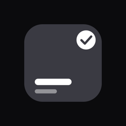

Dayspan
What's on today? One dark screen answers it: your calendar events, your tasks and your habit tiles, together.
- Calendar, read in placeShows the events already on your phone. Never copies them.
- Tasks with a timeLand in the timeline next to your meetings.
- Habit tilesTap to check off. Six months of history on each.
- Reminders that ringA notification, or a real alarm for the ones you must not miss.
No account No cloud No ads Open source
Built for the busy person who opens their calendar all day. Dayspan is the one screen that already knows what's next.